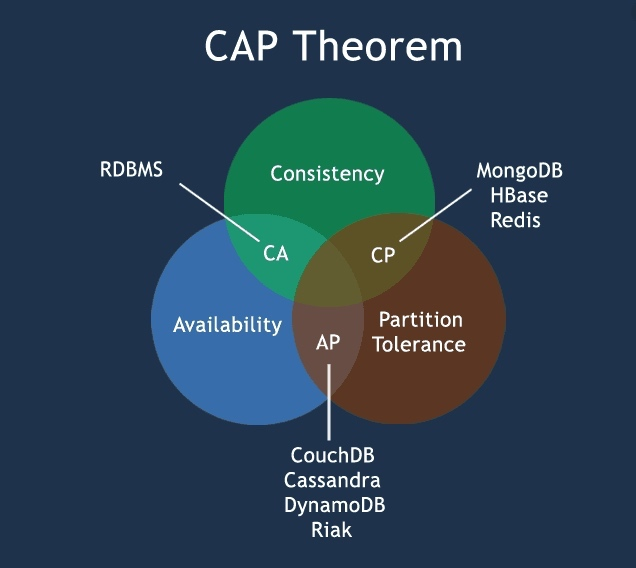
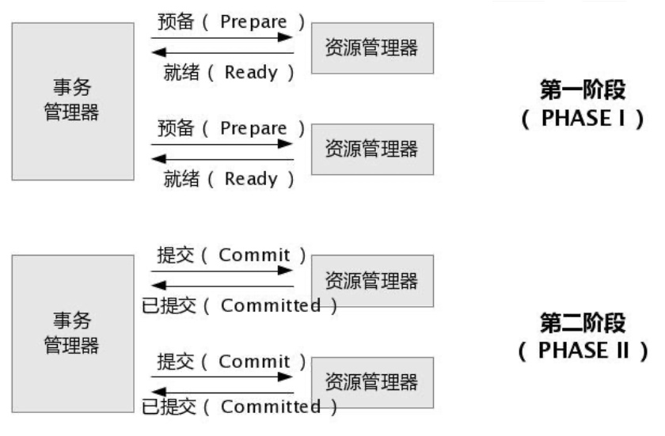
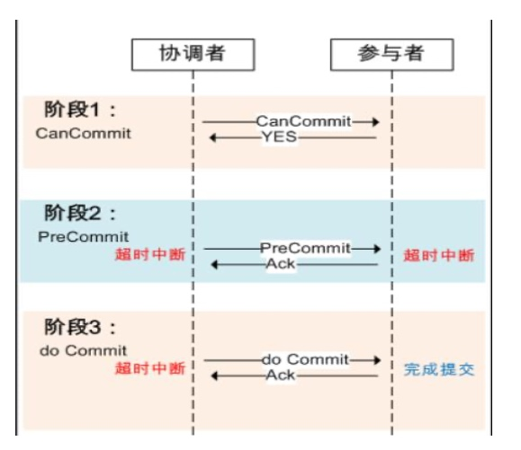
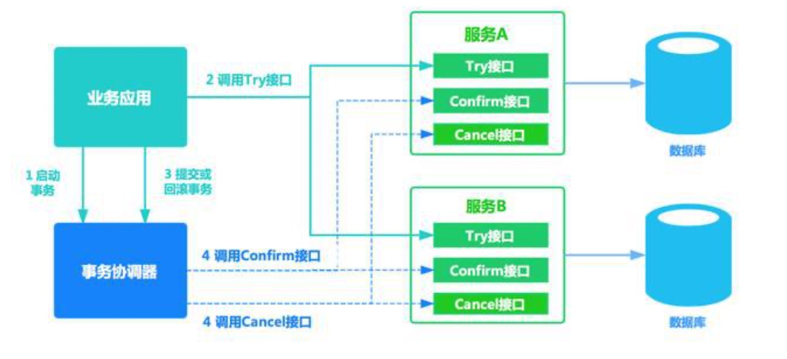
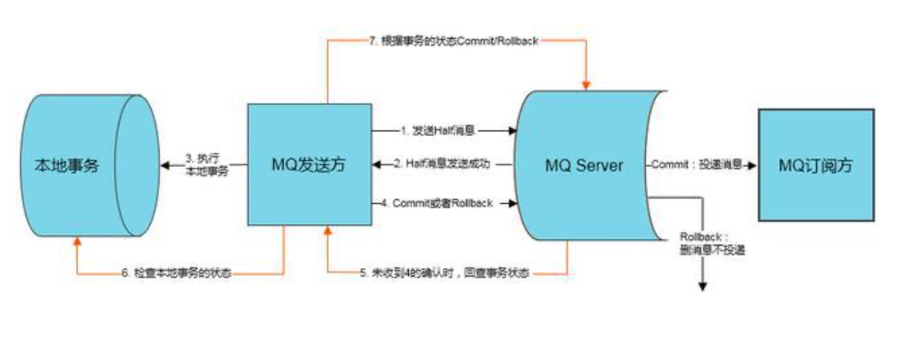
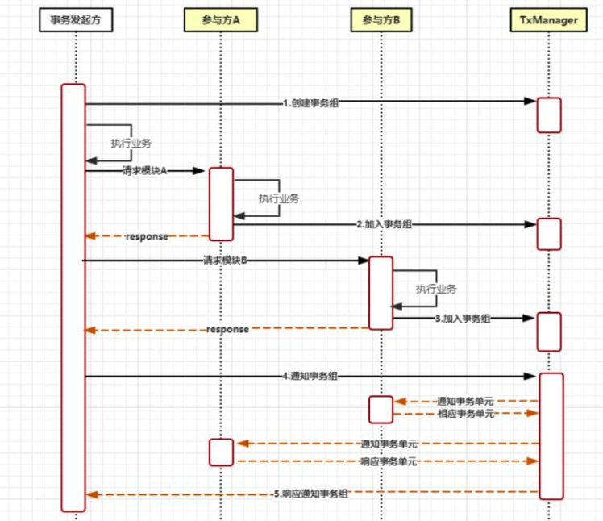
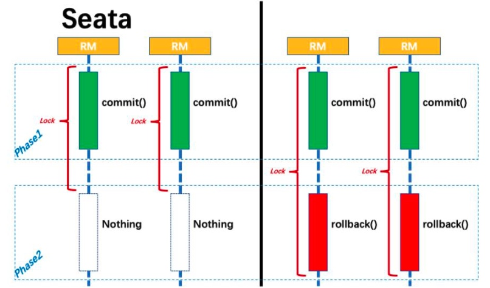
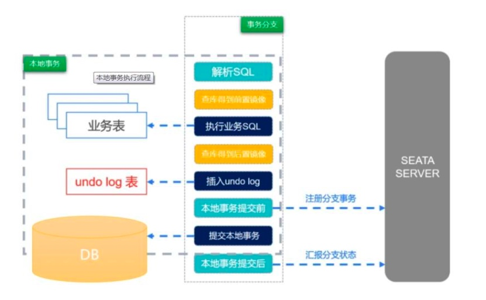
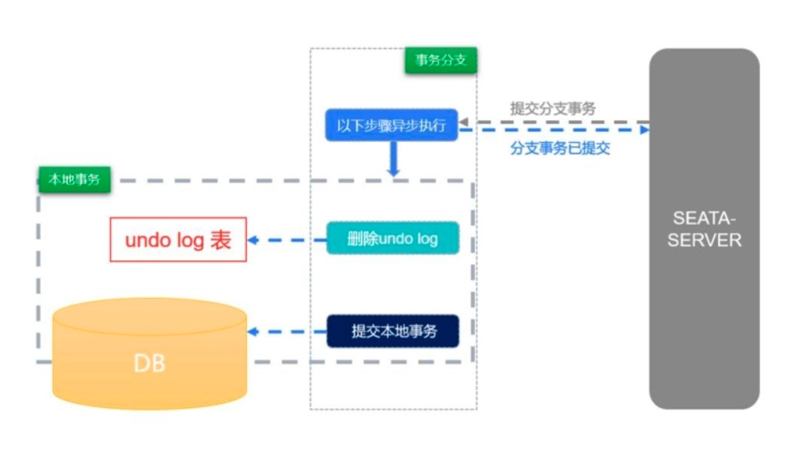
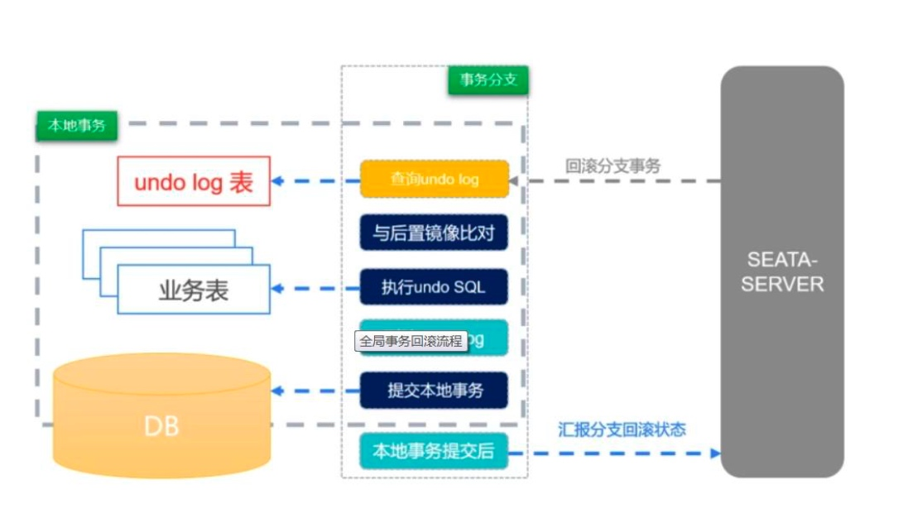

首先需要了解基本的事务知识
MySql 事务
分布式事务
分布式事务产生的原因
随着互联网高速发展，事务的参与者、支持事务的服务器、资源服务器以及事务管理器分别位于不同的分布式系统的不同节点之上。简单的说，就是一次大的操作由不同的小操作组成，这些小的操作分布在不同的服务器上，且属于不同的应用。在这种环境中，我们之前说过数据库的 ACID 四大特性，已经无法满足我们分布式事务。
CAP理论
CAP定理又被称为布鲁尔定理
CAP指的是 一致性(Consistency)、可用性(Availability)、分区容错性(Partition Tolerance)

CAP 定律说的是，在一个分布式系统中，最多只能满足 C、A、P 中的两个，不可能三个同时满足。 而在分布式系统中，网络无法 100% 可靠，分区其实是一个必然现象。
如果我们选择了 CA 而放弃了 P，那么当发生分区现象时，为了保证一致性，这个时候必须拒绝请求，但是 A 又不允许，所以分布式系统理论上 不可能选择 CA 架构，只能选择 CP 或者 AP 架构。
BASE 理论
往往在分布式系统中无法实现完全一致性，于是有了 BASE 理论，它是对 CAP 定律的进一步扩充
BASE 指的是:
- Basically Available(基本可用) : 分布式系统在出现故障时，允许损失部分可用功能，保证核心功能可用。
- Soft state(软状态) : 允许系统中存在中间状态，这个状态不影响系统可用性。
- Eventually consistent(最终一致性) : 经过一段时间后，所有节点数据都将会达到一致。
BASE 理论是对 CAP 中的一致性和可用性进行一个权衡的结果
BASE 理论核心思想就是:我们无法做到强一致，但每个应用都可以根据自身的业务特点，采用适当的方式来使系统达到最终一致性。
BASE 和 ACID 是相反的，它完全不同于 ACID 的强一致性模型，而是通过牺牲强一致性来获得可用性，并允许数据在一段时 间内是不一致的，但最终达到一致状态。
基于 XA 协议的两阶段提交
X/Open 组织提出了分布式事务的规范 ----- XA 协议。
XA 协议包含两部分:事务管理器和本地资源管理器。
其中本地资源管理器往往由数据库实现，目前主流的关系型数据库都实现了 XA 接口，而事务管理器作为全局的调度者，负责各个本地资源的提交和回滚。
XA 的核心，便是全局事务，通过 XA 二阶段提交协议，与各分布式数据交互，分准备与提交两个阶段。
逻辑流程如下图所示：

在 XA 协议中事务分为两阶段：
- 事务管理器要求每个涉及到事务的数据库预提交(precommit)此操作，并反映是否可以提交。
- 事务协调器要求每个数据库提交数据，或者回滚数据
优点：
- 尽量保证了数据的强一致性，实现成本较低，在各大主流数据库都有自己的实现，mysql从 5.5版本开始支持
缺点：
- 单点问题:事务管理器在整个流程中扮演的角色很关键，如果其宕机，比如在第一阶段已经完成，在第二阶段正准备提交 的时候事务管理器宕机，资源管理器就会一直阻塞，导致数据库无法使用。
- 同步阻塞:在准备就绪之后，资源管理器中的资源一直处于阻塞，直到提交完成，释放资源
- 数据不一致:两阶段提交协议虽然为分布式数据强一致性所设计，但仍然存在数据不一致性的可能，比如在第二阶段中，假设协调者发出了事务 Commit 的通知，但是因为网络问题该通知仅被一部分参与者所收到并执行 了 Commit 操作，其余的参与者则因为没有收到通知一直处于阻塞状态，这时候就产生了数据的不一致性。
两阶段提交方案锁定资源时间长，对性能影响很大，基本不适合解决微服务事务问题。
3PC事务
3PC，全称 “three phase commit”，是 2PC 的改进版，其将 2PC 的 “提交事务请求” 过程一分为二。

第一个阶段: CanCommit
- 事务询问
协调者向所有的参与者发送一个包含事务内容的 canCommit 请求，询问是否可以执行事务提交操作，并开始等待各参与者的响应。
- 各参与者向协调者反馈事务询问的响应
参与者接收来自协调者的 canCommit 请求，如果参与者认为自己可以顺利执行事务，就返回 Yes，否则反馈 No 响应。
这一阶段主要是确定分布式事务的参与者是否具备了完成 commit 的条件，并不会执行事务操作。
第二阶段: precommit
协调者在得到所有参与者的响应之后，会根据结果执行两种操作: 执行事务预提交 或者 中断事务。
1、执行事务预提交 分三步走：
- 发送预提交请求：协调者向所有参与者节点发出 preCommit 请求，并进入 prepared 状态
- 事务预提交： 参与者收到 preCommit 请求后，会执行事务操作，对应 2PC 中的 “执行事务”，也会 Undo 和 Redo 信息记录到事务日志中。
- 各参与者向协调者反馈事务执行的结果: 如果参与者成功执行了事务，就反馈 Ack 响应，同时等待指令: 提交(commit) 或终止(abor)。
2、中断事务 分两步走
- 发送中断请求： 协调者向所有参与者节点发出 abort 请求
- 中断事务： 参与者如果收到 abort 请求或者超时了，都会中断事务。
第三阶段： doCommit
1、执行提交
- 发送提交请求: 进入这一阶段，如果协调者正常工作，并且接收到了所有协调者的 Ack 响应，那么协调者将从 “预提交” 状态变为 “提 交” 状态，并向所有的参与者发送 doCommit 请求 。
- 事务提交: 参与者收到 doCommit 请求后，会正式执行事务提交操作，并在完成之后释放在整个事务执行期间占用的事务资源。
- 反馈事务提交结果: 参与者完成事务提交后，向协调者发送 Ack 消息。
- 完成事务: 协调者接收到所有参与者反馈的 Ack 消息后，完成事务。
2、中断事务(假设有任何参与者反馈了 no 响应，或者超时了，就中断事务)。
- 发送中断请求: 协调者向所有的参与者节点发送 abort 请求。
- 事务回滚: 参与者接收到 abort 请求后，会利用其在二阶段记录的 undo 信息来执行事务回滚操作，并在完成回滚之后释放整个事务执行期间占用的资源。
- 反馈事务回滚结果: 参与者在完成事务回滚之后，想协调者发送 Ack 消息。
- 中断事务: 协调者接收到所有的 Ack 消息后，中断事务。
3PC与2PC的区别
注意:在阶段三，可能会出现 2 种故障:
出现了任一种情况，最终都会导致参与者无法收到 doCommit 请求或者 abort 请求，针对这种情况，参与者都会在等待超时之后，继续进行事务提交。
优点:
相比较 2PC，最大的优点是减少了参与者的阻塞范围(第一个阶段是不阻塞的)，并且能够在单点故障后继续达成一致(2PC 在提交阶段会出现此问题，而 3PC 会根据协调者的状态进行回滚或者提交)。
缺点:
如果参与者收到了 preCommit 消息后，出现了网络分区，那么参与者等待超时后，都会进行事务的提交，这必然会出现事务不一致的问题
TCC 方案
TCC 其实就是采用的补偿机制，其核心思想是: 针对每个操作，都要注册一个与其业务逻辑对应的确认和补偿(撤销)操作。
其将整个业务逻辑的每个分支显式的分成了 Try、Confirm、Cancel 三个操作。Try 部分完成业务的准备工作，confirm 部分完成业务的提交，cancel
部分完成事务的回滚。

优点: 跟 2PC 比起来，实现以及流程相对简单了一些，但数据的一致性比 2PC 也要差一些
缺点:TCC 属于应用层的一种补偿方式，所以需要程序员在实现的时候多写很多补偿的代码，而且补偿的时候也有可能失败，在一些场景中，一些 业务流程可能用 TCC 不太好定义及处理
MQ(事务消息)
目前，仅阿里云的 RocketMQ 支持事务消息。帮助用户实现类似 X/Open XA 的分布事务功能，通过 MQ 事务消息能达到分布式事务的最终一致。

- 1、发送方向 MQ 服务端发送消息
- 2、MQ Server 将消息持久化成功之后，向发送方 ACK 确认消息已经发送成功，此时消息为半消息
- 3、发送方开始执行本地事务逻辑
- 4、发送方根据本地事务执行结果向 MQ Server 提交二次确认(Commit 或是 Rollback)，MQ Server 收到 Commit 状态则将半消息标记为可投递，订阅方最终将收到该消息;MQ Server 收到 Rollback 状态则删除半消息，订阅方将不会接受该消息
- 5、在断网或者是应用重启的特殊情况下，上述步骤 4 提交的二次确认最终未到达 MQ Server，经过固定时间后 MQ Server 将对该消息发起消息回查
- 6、发送方收到消息回查后，需要检查对应消息的本地事务执行的最终结果
- 7、发送方根据检查得到的本地事务的最终状态再次提交二次确认，MQ Server 仍按照步骤 4 对半消息进行操作
其中，事务消息发送对应步骤 1、2、3、4，事务消息回查对应步骤 5、6、7
Lcn 事务
LCN 并不生产事务，LCN 只是本地事务的协调工。
TX-LCN 定位于一款事务协调性框架，框架其本身并不操作事务，而是基于对事务的协调从而达到事务一致性的效果。
事务控制原理
TX-LCN 由两大模块组成, TxClient、TxManager
TxClient 作为模块的依赖框架，提供 TX-LCN 的标准支持，TxManager 作为分布式事务的控制方。事务发起方或者参与方都由 TxClient 端来控制。

- 创建事务组
是指在事务发起方开始执行业务代码之前先调用 TxManager 创建事务组对象，然后拿到事务标示 GroupId 的过程。
- 加入事务组
添加事务组是指参与方在执行完业务方法以后，将该模块的事务信息通知给 TxManager 的操作。
- 通知事务组
是指在发起方执行完业务代码以后，将发起方执行结果状态通知给 TxManager,TxManager 将根据事务最终状态和事务组的信息 来通知相应的参与模块提交或回滚事务，并返回结果给事务发起方。
Seata 事务
Seata 是 阿里巴巴 开元的分布式事务中间件，以高效并且对业务 零侵入的方式，解决微服务场景下面临的分布式事务问题。
设计思想
Seata 的AT 模式采用的是大量运用在数据库软件的 write ahead log 思想，即把事务的信息以事务日志的方式记录下来。这种处理方式实际上是对传统二阶段提交的一种改进和优化，主要有几个关键点：
- 传统两阶段提交协议是阻塞协议，性能差
- 传统两阶段提交协议高可用性不好
- 传统两阶段提交协议的不支持全局事务隔离机制
- 根据八二原则，80% 的涉及到全局事务的业务是能正常完成并提交的
因此，在 AT 模式下，seata 采取的做法是，一个事务分支的数据库操作执行完后，马上进行本地事务的提交，从而释放相关的数据库资源。

- 分支事务中数据的本地锁由本地事务管理，在分支事务 Phase1 结束时释放。
- 同时，随着本地事务结束，连接也得以释放。
- 分支事务中数据的全局锁在事务协调器侧管理，在决议 Phase2 全局提交时，全局锁马上可以释放。只有在决议全局回滚的情况下，全局锁才被持有至分支的Phase2 结束。
本地事务执行流程
在进行本地提交的前提是，seata 会解析 SQL，获取数据库表的元数据，根绝 SQL 类型，选择性地生成数据的前置镜像和后置镜像， 保存在 undo_log 表中，并且要求与保存 undo_log 与业务 SQL 在同一个本地事务内。
这就保证了如果一个本地事务被提交，那么必定对应这一条 undo_log数据，如果保存 undo_log失败，那么业务sql 也会失败

全局事务提交流程
因为每个分支事务的本地事务都已经被提交，所以如果全局事务能够顺利进行到“提交“这一阶段，那么意味着所有事务分支的本地事 务都已经被提交了，数据的一致性已经得到了保证。
这个时候全局事务的提交就变得十分轻量级，就是把 undo_log 对应的记录删掉即可，即使是当时删除失败了，也已经不会影响全局事务的最终结果，这次删不了，那就待会再删，程序删不了，没事，顶多人工删。

全局事务回滚流程
如果全局事务的任何一个事务分支失败了，那么全局事务就进入“回滚“流程，回滚时依据先前保存好数据镜像，将原来的数据回放回去。
如果全局回放成功，那么数据的一致性也就得到了保证，如果回放不成功，那么事务就进入异常。应对异常，可能需要重试，可能需要人工介入。
